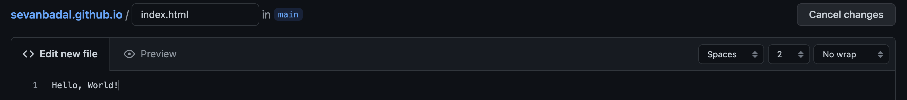

Lab 13
Overview & Setup
Today's objective is to deploy your midterm project on GitHub Pages. Follow the steps below and submit a link to your GitHub Page's site using the Lab 13 submission form.
- Use my feedback in the midterm submission page to update your midterm project's source code
- In addition to my comments, edit your project's file structure by creating the following folders:
- styles
- images
- scripts
- docs
- audio
- video
- Move all stylesheets, images, scripts, audio and video files to their respective directories. You will need to update all paths that point to these resources. Read more about project structure here.
- Index files are entry points to static websites. If you don't already have one, identify an HTML file that can be used as a home page then rename that file to
index.html.
- The source code to this lab can be found here: https://github.com/SevanBadal/sevanbadal.github.io
Checkpoint 1
Your project should have a similar project structure as the one below:
./
|
-index.html
|
-other-html-files.html
|
-images/
|
-some-image.png
|
-styles/
|
-some-styles.css
|
-scripts/
|
-some-script.js
GitHub Account & Repository
- Create a GitHub account. Keep in mind that the subdomain of your GitHub Page will be your GitHub username. The image below illustrates the different components of a domain.
- Explore the user interface and create a new repository. The name of this repo MUST be username.github.io where username is your GitHub username. Leave all other fields and settings as their default values.
- Create a file named
index.html in the newly created repository (there is a link to create a file in the text "Get started by creating a new file" ). Add Hello, World! to give the file some content. We will update this later.

- Commit the new file to the repository
Checkpoint 2
In your browser, navigate to username.github.io. Again, username should be the username of your GitHub account.
Repository File Structure
In this section, we will replicate the file structure of your local project in the Github repository.
- GitHub doesn't allow the creation of empty directories. Instead, we will create
.gitkeep files in each subdirectory in our project. To do this, select add file and choose create new file.
- Type
styles/.gitkeep where it asks you to name the file. This will create a folder, styles, and a file, .gitkeep. You can leave this file empty and click commit new file.
- Repeat the step above for each subdirectory in your project
Checkpoint 3
Your GitHub repository should have a file structure that matches the file structure in the image below:
Uploading Files
In this section, you will upload all files to the repository.
-
Starting with
images and styles directories, navigate into a subdirectory and select add file. This time you should choose upload files. Select the relevant project files for the subdirectory.
- Repeat the step above for all files except
index.html. For index.html, directly copy and paste your source code from your local project into the index.html file in the Github repository.
Checkpoint 4
In your browser, navigate to username.github.io. Again, username should be the username of your GitHub account. Your website should be live now! Share a link to your website in the Lab 13 submission form.